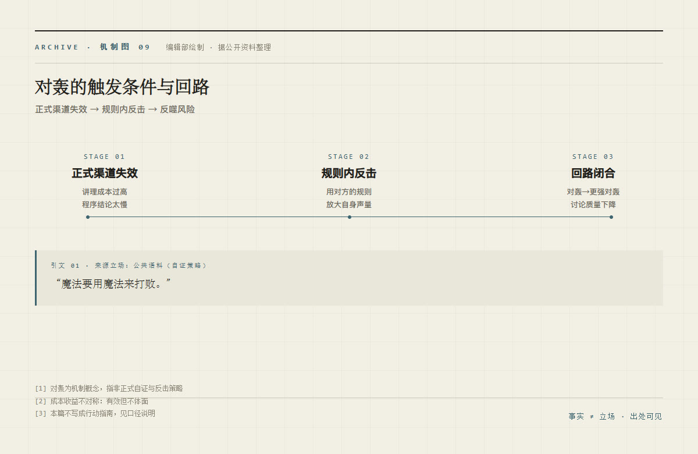

魔法对轰：一种不体面的自证
常态化观察 · 之二 · 核心章。拆机制与成本收益，不写成爽文，不是行动指南。
这一篇是全专题的核心现场。前面八篇搭了一台机器：情绪换流量、互动定分发、文体可复制、大声者与「看起来对」者定价、程序结论迟到、讲道理贬值、默认设定免论证。机器运转到今天，一个必然产物出现了：「魔法对轰」——被结构性挤出正式表达渠道的普通人，开始用对方的规则反击：你用情绪动员，我也用情绪动员；你占默认设定，我就解构你的默认设定；你搞道德定性，我就把定性做成梗。口号版一句话：「魔法要用魔法来打败。」[1]
本篇立场先行：对轰有效，但不体面，而且有代价。把它写成「反击的爽文」是本专题的失职——那只是把站队换了个方向。把它写成「堕落的闹剧」同样失职——那是在否定真实存在的表达困境。要做的只有一件事：把它当成社会现象，拆它的触发条件、它的策略结构、它的成本收益表。
对轰不是新发明，历史上任何弱势叙事都有「以其人之道」的反击史。它在此时此地被普遍采用，是因为四个条件同时成立：一，正式表达渠道（讲理、澄清、申诉）的成本已经高过收益（篇 07）；二，默认设定把出口堵死，开口先输一半（篇 08）；三，程序结论以年计，救不了场（篇 06）；四，情绪化动员的工具链高度成熟——起梗、做表情包、剪切片、挂人，全是可复用的低成本技术（篇 03、04）。四个条件齐了，对轰就从「个别人的撒气」变成「理性参与者的可选项」。
注意「理性」这个词的用法。这里不是说对轰的人不理性，恰恰相反——对轰是算完账之后的理性选择：讲道理，零收益；沉默，零收益；对轰，至少有「让对方也疼一下」的非零收益。当一个博弈里只剩下这一项正收益，选它的人多了，就不该奇怪。要改变的不是参与者的心性，是收益表。
拆掉具体段子与骂战，对轰的策略结构只有三种基本型。其一，镜像动员：对方用小作文，这边也出小作文；对方刷话题，这边也刷话题；把对方的武器库照单全收，用在对方身上。其二，解构默认：对「免论证前提」做梗化消解——把「这还需要说吗」变成可笑的复读体，让前提重新变得需要论证。这一型最接近公共讨论的自救，也最容易滑向虚无。其三，代价展示：不是反驳观点，是展示「按你的规则，你会付出什么代价」——挂人、举报、对冲投诉。这一型最有效，也最危险，因为它直接以伤害为语言。
三种型经常混用，且有一个共同特征：它们都不在「事实层」作战，都在「规则层」作战。对轰的双方往往都清楚对方说的事实未必全错，但既然事实层的裁判（程序、平台、媒体）都已失灵，那就打规则——谁先把对方拖进对方自己的规则里出丑，谁就赢一回合。这是公共讨论的退化，也是公共讨论在现有定价系统下的最优退化。
与本专题的接点在哪？「男性叙事」的持有者在这个现场里的处境是：他们在默认设定里长期处于被告席（篇 08），讲道理的通道贬值（篇 07），程序结论救不了场（篇 06）——于是对轰几乎成了这个群体唯一能发出声音的形态。理解这一点，就能理解为什么互联网上「性别对立」的对轰规模在扩大：不是男性变坏了或女性变坏了，是发声的收益表被改写了。（分析性判断，见注 [3]）
引文 01 · 来源立场：公共语料（自证策略）
"魔法要用魔法来打败。"
—— 网络流行语（据公共语料观察）。它概括了一种自证策略的自我命名；句式本身是观察对象，不是本文主张。

▲ 图 09：对轰的触发条件与回路 · 编辑部绘制。结构说明见注 [1][2]。
收益面：第一，可被看见——这是唯一在现有系统里能换来可见度的手段；第二，短期威慑——让习惯单方面定性的对手开始计价；第三，群体凝聚——戏谑与梗文化提供归属感，缓解篇 08 说的自嘲内伤。收益都是真的。
成本面：第一，反噬——用规则打规则的人同样被规则困住，账号被冲、被举报、被截图合订本，代价随机降临；第二，误伤——对轰的火力覆盖不认个体，只想安静过日子的人反复中弹，尤其是不参与对轰的两性多数；第三，讨论质量塌方——所有议题都被拖进规则层作战，事实层的公共品（核查、程序、长文分析）加速枯竭；第四，螺旋升级——对轰培育更强的对轰，均衡点是所有人用最大音量说话，所有人的话都不可信[2]。
算完这张表，结论不是「别对轰」——那是站着说话不腰疼——而是：对轰是止痛药，不是治疗方案。止痛药有它的正当性，但一个只剩止痛药的医疗体系，病灶在体系。下一篇（对轰代价）会把成本面再往深拆一层；本篇先立住这条线：理解它、不美化它、也不妖魔化它。
最后重申纪律，这段请当作本篇的一部分来读：本文拆解对轰的机制，不是在教任何人如何对轰。策略结构写出来是为了解释「为什么它会发生」，不是战术手册。谁把这篇当行动指南，谁就在把社会学观察读成武器说明书——那是误读，也是本专题明文反对的用法。
注 · SOURCES
[1] 「魔法对轰」「魔法打败魔法」为网络流行语（据公共语料观察），本文作机制概念使用，指非正式自证与反击策略。
[2] 成本收益表为本文的机制分析框架，系分析性判断；各项成本的发生概率无公开统计。
[3] 「性别对轰规模扩大源于收益表改写」为机制推论，非对任何群体的道德评价，也不排除其他因素。
[4] 三种策略型（镜像动员 / 解构默认 / 代价展示）为本文的类型化归纳，实际现象常为混合形态。
口径说明
本文为社会学观察，不站任何性别立场，作者性别不作为论证依据。本文不构成行动指南，策略结构仅为机制解释；不转述具体骂战与个案指控。拆解机制是为了理解，不是教人操纵舆论。
出口：既然对轰的根源是收益表，改变也只能改收益表。最直接的一条：把「澄清与程序性结论」的分发收益做上去（篇 06 提过的等权重传播），让讲理的收益第一次追平对轰。追不平之前，任何对「别对轰」的呼吁都是在要求单方面裁军。